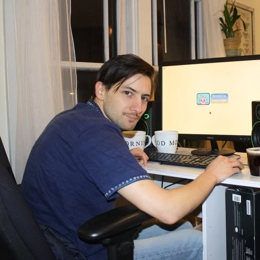
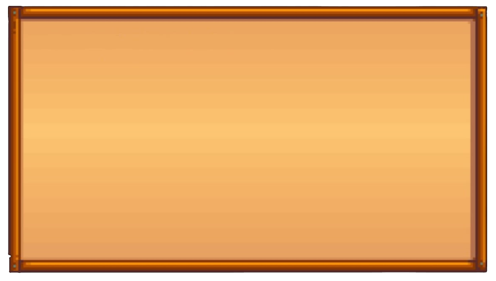

A história começa quando você, o personagem principal, cansado da vida
estressante e
sem propósito na cidade grande, lembra de uma carta deixada por seu avô em seu leito de morte, em que ele
pede
para você abrir apenas quando sentisse seu espírito desvanecer com um grande vazio. Finalemente sentindo que
é o
momento certo, a carta é aberta e nela o avô revela que te
deixou uma antiga fazenda em um lugar pacífico chamado Vale do Orvalho (Stardew Valley). Movido pelo desejo
de
mudar de vida, você decide deixar o emprego na corporação Joja e partir para esse novo destino, em busca de
tranquilidade e de um novo
começo.

Fotografia de Erick Barone com o seu nome de desenvolvedor no computador

Em dezembro de 2024, o jogo registrou mais de 41 milhões de cópias vendidas,
estando disponível em Android, Mac, Xbox, Playstation,
Linux e muito mais! O jogador assume o papel de um personagem que herda uma fazenda em ruínas de seu
avô. A missão principal é restaurar a fazenda e transformá-la
em um lugar próspero, cultivando plantas, criando animais e interagindo com a comunidade local. O jogo
mistura elementos de simulação de vida com exploração,
combate e interação social.
A agricultura é o coração do jogo. Desde o plantio das sementes até a
colheita, a terra precisa ser regada e cuidada a cada dia, o jogo
oferece uma grande variedade de plantas que variam conforme a estação do ano. O cuidado com os animais
também é importante, vacas, galinhas, ovelhas e outros
bichos precisam de atenção diária, incluindo alimentação e cuidados especiais, como tosquia ou ordenha.
Outras mecãnicas importantes também são incluidas no jogo
como mineração nas minas, luta com inimigos, interações sociais com NPCS e crafting de recursos e comidas.